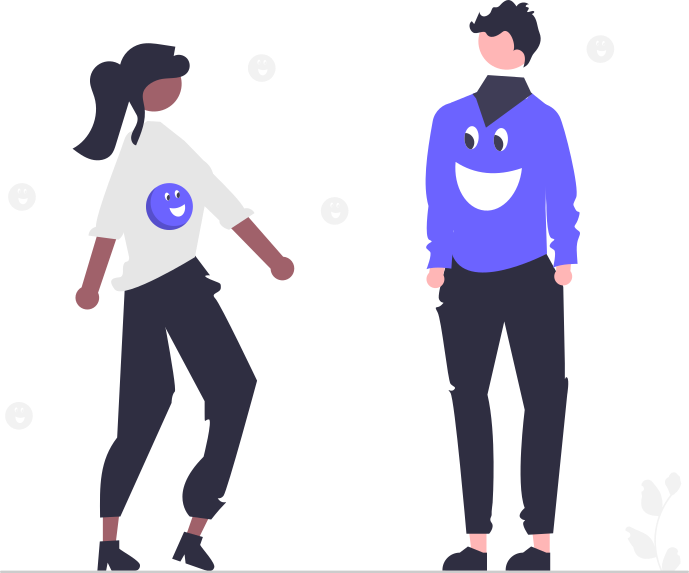

SupportMe
A Community That Shows Up
.svg)

SupportMe was developed during the summer and fall of 2025 as a research paper and Figma prototype with Penn State
University’s ReSENSE Research Lab.
Problem
In a digital landscape where online fundraising platforms are expanding but older adults remain disproportionately
excluded, there is a growing need for equitable, accessible systems of support. For many seniors facing illness,
financial strain, and social isolation, navigating existing crowdfunding tools can be overwhelming, unclear, and
structurally disadvantageous, leaving them uncertain about how to seek meaningful assistance.
Solution
SupportMe is a proposed mobile and web platform designed to connect older adults with both emotional and financial
support in one accessible space. It integrates peer support forums, an equity-focused crowdfunding model, a
subscription-based Community Fund for micro-assistance, and accessibility-first interface features tailored to
seniors. By combining mutual aid with human-centered design, SupportMe aims to reduce social isolation, address
financial gaps, and create a more dignified and equitable experience for seniors seeking support.
Research
Literature Review + Crowdfunding Platform Analysis
To ground the development of SupportMe in evidence rather than assumption, I conducted an extensive review of peer-reviewed
research examining social isolation in older adults, financial precarity among seniors, digital exclusion and accessibility
barriers, and documented algorithmic bias within crowdfunding platforms. This review was complemented by an analysis of how
existing crowdfunding systems function in practice, including their reliance on engagement-based visibility, narrative framing
and storytelling privilege, and heavy dependence on social media reach for campaign success. Together, these sources provided a
structural understanding of why seniors are disproportionately disadvantaged within current digital fundraising ecosystems.
Key Results
-
Engagement-Based Visibility: Existing crowdfunding platforms prioritize campaigns that already receive high engagement,
which amplifies visibility for popular posts and makes it harder for seniors with smaller networks to be seen.
-
Storytelling Privilege: Campaign success is often tied to emotionally compelling narratives, which pressures users to
overshare personal hardship and disadvantages those who are uncomfortable, less fluent, or unable to craft “ideal” stories.
-
Reliance on Social Media Reach: Because sharing on social platforms is a primary driver of donations and traffic, seniors
who use social media less frequently or lack digital confidence face reduced exposure and lower fundraising outcomes.
Design Implications
The findings suggested seniors are not excluded because they lack need, but because platforms are structured in ways that privilege
visibility, narrative fluency, and social reach. Rather than treating these barriers as user limitations, this project reframed them as
system design flaws. Each inequity directly informed a corresponding design decision within SupportMe.
- Visibility should not be determined by engagement metrics. SupportMe avoids popularity-based ranking.
- Need should not be overshadowed by storytelling performance. The platform supports needs-focused requests and reduces pressure to overshare.
- Support should not depend on external social media reach. Discovery is designed to work inside the platform itself.
- Accessibility must be proactive and easy to find. Key controls are surfaced directly in the experience.
- Privacy should be the default. The design prioritizes trust for users sharing sensitive health and financial information.
Ideation
The ideation phase focused on translating research patterns into concrete platform requirements. Instead of optimizing for engagement,
SupportMe prioritizes fairness, dignity, and low-barrier participation. The platform concept combines peer-based emotional support with
a more equitable approach to financial assistance.
Equity-First Discovery
Campaign visibility is randomized or rotated rather than boosted by likes, comments, or shares. This helps prevent “rich get richer”
dynamics where already-successful campaigns dominate attention.
Peer Support Communities
Forums are designed for shared experience, encouragement, and connection. The intent is emotional and informational support, not medical advice.
Community Fund Micro-Assistance
An optional subscription-based Community Fund supports small, urgent needs like prescriptions, copays, groceries, or rides to appointments,
reducing reliance on public storytelling.
Accessibility + Privacy by Design
The concept foregrounds readability, simplified navigation, and clear privacy protections so seniors can participate with confidence.
Design
Mutual Aid Tab
A dedicated browsing view supports equitable discovery and makes it easy to find campaigns by urgency, duration, funding status, or need type.
Campaign Creation Without Narrative Pressure
Campaign creation encourages needs-focused descriptions and supports anonymous or pseudonymous requests for safety and destigmatization.
Accessibility Controls (“Fit Me”)
Front-facing controls for font size, contrast, motion sensitivity, screen reader compatibility, and optional voice navigation are part of the design.
Transparency + Trust
The Community Fund includes clear reporting and user-first transparency to help reduce skepticism and fear around digital financial tools.
Proposed Evaluation
This project did not include primary app testing. The next step would be to complete the prototype and conduct a pilot study designed to evaluate usability, accessibility,
perceived fairness, and emotional impact across seniors with varying levels of digital literacy.
Pilot Structure
- Population: Older adults aged 65+ across diverse socioeconomic backgrounds
- Process: onboarding, forum participation, campaign creation, Community Fund request flow
- Methods: mixed-method usability testing, surveys, and interviews
Key Metrics
- Accessibility: ease of configuring “Fit Me” controls and navigating core tasks
- Equity: visibility distribution and funding outcomes across user groups
- Emotional impact: perceived social support and reduced isolation markers
- Trust: privacy confidence and comfort sharing sensitive information